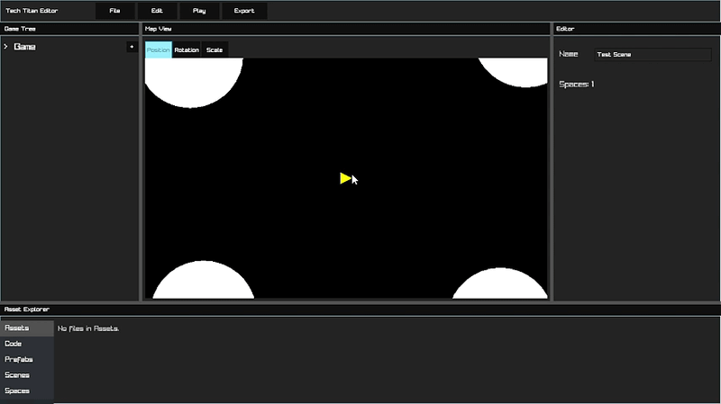

Project Description
Tech Titan Engine (TTE) is a game-development project centered on a C++ runtime and a separate visual editor. The editor is intended to let creators assemble a game, organize its scenes and entities, and configure a project visually. Lua scripting provides a way to add game behavior, while the runtime is responsible for running the project.
The project is being developed around a hierarchy of games, scenes, spaces, and entities. Spaces can be configured for 2D or 3D work. The goal is to make the structure of a project understandable in the editor without limiting the project to one dimension or requiring every task to happen in the same tool.
- C++ game runtime
- Visual project editor
- 2D and 3D spaces
- Lua scripting
- Separate editor and runtime workflow
Innovation Claim
This is a design goal for the project, not a claim that every planned capability is finished. TTE is in active development, and the editor, runtime, and workflow will continue to change as the prototype grows.
Design Workflow
The current design separates project setup from running the game. The editor is where the project is organized and configured; the runtime runs the saved project.
Prototype and Project Materials
This section will collect the work created for the SIP as it becomes available. The workflow diagram above describes the current design; it is not a screenshot of a completed editor or a finished feature.
Editor Screenshots
Placeholder — add screenshots as the editor prototype is ready to share.
Blueprints and Concept Art
Placeholder — add interface sketches, design notes, and prototype visuals.
Source Code
The public project repository will be linked here when it is ready to share. For now, visit the Tech Titan GitHub profile.
SIP Brief
Week 4 SIP Brief placeholder. The brief will be embedded or linked here after it is completed.
Feedback Questions
- Is the purpose of Tech Titan Engine clear from this page?
- Does the editor-to-runtime workflow make sense?
- What additional prototype visual would help you understand the project?